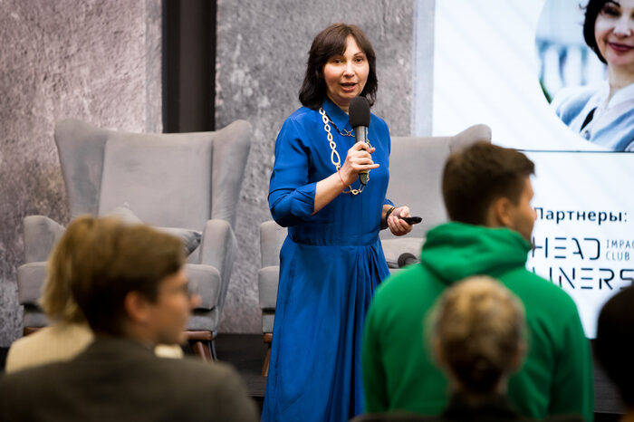
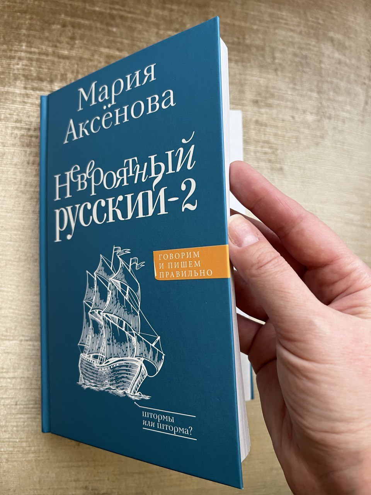
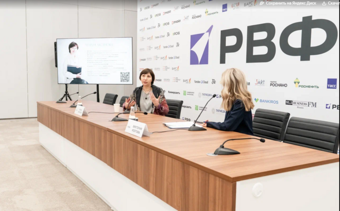
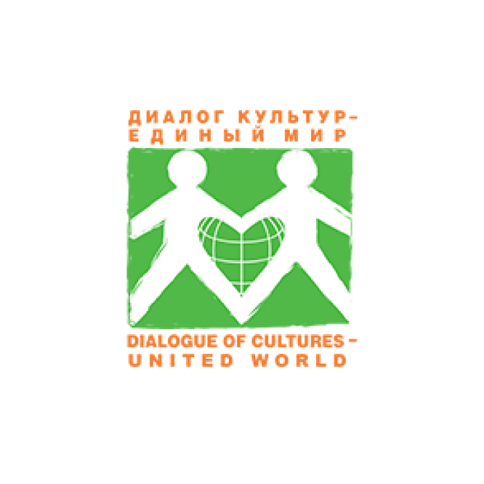
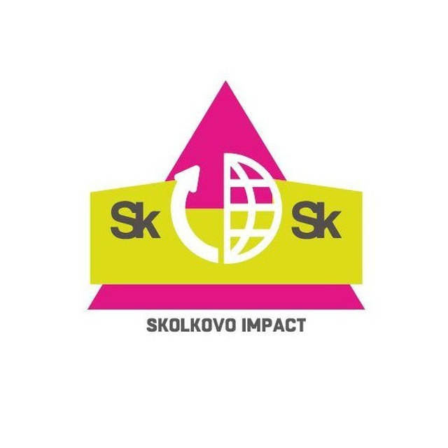
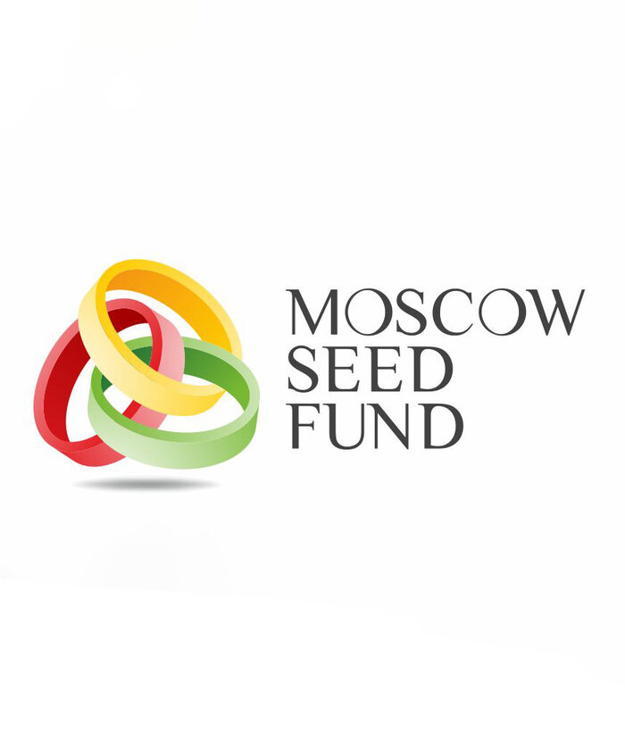

Развитие человека
Связывать профессиональные задачи с личными целями и потенциалом.
Ассоциация Аванта
Знания, связи и поддержка для импакт-предпринимателей и лидеров. Развиваем проекты, учимся и действуем вместе.
Предприниматели. Эксперты. Лидеры.
Разные пути, общая среда для развития.
 Из жизни сообщества
Из жизни сообщества01 / Наша миссия
Помогать увидеть свою задачу, найти опору и перейти к действию.
На действующем сайте Аванты мы говорим о поиске целей, развитии и масштабировании деятельности, партнёрствах и выходе в новые сферы.
Миссия сохранена из материалов действующего сайта.02 / Принципы
Формулировки для обсуждения.
Принципы требуют согласования.
Связывать профессиональные задачи с личными целями и потенциалом.
Переходить от идеи к проверке, опыту и следующему шагу.
Учитывать, что проект меняет в жизни людей и общества.
Делиться вопросами, опытом и разными взглядами на задачу.
Находить людей, с которыми можно создавать и развиваться.
Учиться, осмыслять опыт и передавать его дальше.
03 / Для кого
Для людей и организаций,
заинтересованных в развитии.
Развивать дело, находить партнёров и обсуждать решения с людьми, которые понимают вашу задачу.
Узнать об участииНаходить экспертизу и среду для изменений в командах, организациях и общественных инициативах.
Совместные образовательные программы и экспертное взаимодействие.
Лекции, наставники и программы для первого самостоятельного шага.
Поддержка деятельности ассоциации и общие проекты.
04 / Что мы делаем
 Академия инноваторов · 2023
Академия инноваторов · 2023Программы, лекции, менторство и преподавательская деятельность.
 Экспортный акселератор · 2020
Экспортный акселератор · 2020Работа с бизнес-моделью, ценностным предложением и окружением проекта.

Импакт Дэй · 2021Конференции, импакт-дни, круглые столы и экспертные обсуждения.


Невероятный русский — 205 / Просветительское наследие
Энциклопедии «Аванта+», издательские проекты и книги Марии Аксёновой.
В архиве сайта собраны история издания «Энциклопедии для детей», награды и материалы книжных серий.
Формулировка преемственности и планы новых серий готовятся к согласованию.
06 / Люди Аванты

Предприниматель, инвестор и просветитель. Издатель «Энциклопедии для детей Аванта+».

Генеральный директор Molten Consulting, консультант и коуч первых лиц.
07 / Из опыта Аванты
Программы и события
из архива действующего сайта.
проектов начали программу
экспортного акселератора · 2020
выпускников получили дипломы
экспортного акселератора · 2020
образовательная часть
«Академии инноваторов»

Выступления, жюри Venture Games и разговор об инвестиционной грамотности.
Встреча импакт-проектов, инвесторов и слушателей; выступление Данила Кислинского.
Жизнестойкость. Смыслы. Будущее.
Бизнес-конференция о лидерстве и работе в условиях неопределённости.
08 / Знания и практика
Бизнес-модель, ценностное предложение, экосистема проекта и подготовка питча.
Формат обсуждения с коллегами и работа над развитием своего проекта.
Книга о живом языке, словах и выражениях из материалов издательского раздела.
В тестовом варианте — подборка существующих материалов. Авторские статьи для нового раздела готовятся отдельно.
09 / Мы в СМИ
Упоминание выступления Марии Аксёновой в архиве событий Аванты.
Архивные награды и публикации об издательских проектах «Аванта+».
Материал газеты от 19–25 марта 2007 года, указанный в архиве издательства.
10 / Партнёрство






Логотипы из раздела партнёров действующего сайта. Актуальность состава для новой версии уточняется.
11 / Сообщество
Присоединяйтесь к клубу и ассоциации по единому пути бесплатного вступления.
Возможности и порядок оформления участия требуют согласования.